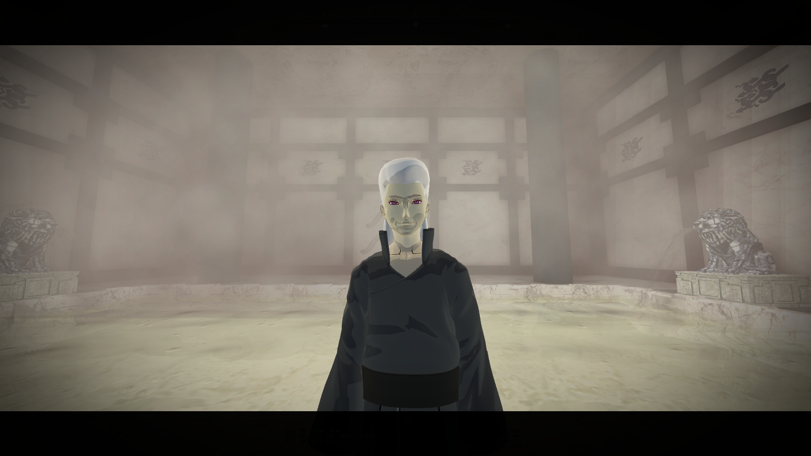

Hiérarchie du Village
L'ordre est le seul rempart contre le chaos du désert.
-

KazekageL'Ombre du Vent. Le dirigeant suprême de Sunagakure, protecteur absolu du village et commandant en chef de toutes les forces shinobi. -
Conseil des AnciensComposé des shinobis les plus sages et expérimentés. Ils conseillent le Kazekage et prennent les décisions politiques majeures.
-
Commandant JōninReprésentant des Jōnin auprès du Kazekage. Il coordonne les efforts de guerre et la logistique militaire à grande échelle.
-
Jōnin & ANBUL'élite du village. Chargés des missions de rang A et S, des assassinats (ANBU), et de la formation des futures générations.
-
ChūninShinobis confirmés, capables de diriger des escouades. Ils constituent l'épine dorsale des forces militaires de Suna.
-
GeninApprentis shinobis effectuant des missions de soutien et s'entraînant pour maîtriser les arts du désert.